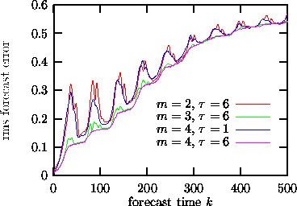
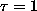
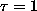
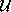
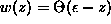
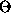

Next: Finding unstable periodic orbits
Up: Nonlinear prediction
Previous: Model validation
Conventional linear prediction schemes average over all locations in phase
space when they extract the correlations they exploit for predictability.
Tong [42] promoted an extension that fits different linear models if the
current state is below or above a given threshold (TAR, Threshold
Autoregressive Model). If we expect more than a slight nonlinear
component to be present, it is preferable to make the approximation as local in
phase space as possible. There have been many similar suggestions in the
literature how to exploit local structure, see
e.g. [43, 44, 45, 46]. The simplest approach is to make the
approximation local but only keep the zeroth order, that is, approximate the
dynamics locally by a constant. In the TISEAN package we include such a
robust and simple method: In a delay embedding space, all neighbors of  are saught, if we want to predict the measurements at time n+k. The forecast
is then simply
are saught, if we want to predict the measurements at time n+k. The forecast
is then simply
i.e. the average over the ``futures'' of the neighbors. The average forecast
errors obtained with the routine zeroth (predict would give similar
results) for the laser output data used in Fig.  as a
function of the number k of steps ahead the predictions are made is shown in
Fig. . One can also iterate the predictions by using
the time series as a data base.
as a
function of the number k of steps ahead the predictions are made is shown in
Fig. . One can also iterate the predictions by using
the time series as a data base.

Figure:
Predictions k time steps ahead (no iterated predictions) using the program
zeroth. Top (red) curve: embedding dimension two is insufficient, since these
flow data fill a (2+ )-dimensional attractor.
Second from top (blue):
Although embedding dimension four should in theory be a good
embedding,  suppresses structure perpendicular to the diagonal so
that the predictions are as bad as in m=2! Lower (green, pink) curves: m=3 and 4 with
a delay of about 4-8 time units serve well.
)-dimensional attractor.
Second from top (blue):
Although embedding dimension four should in theory be a good
embedding,  suppresses structure perpendicular to the diagonal so
that the predictions are as bad as in m=2! Lower (green, pink) curves: m=3 and 4 with
a delay of about 4-8 time units serve well.
Apart from the embedding parameters, all that has to be specified for zeroth
order predictions is the size of the neighborhoods. Since the diffusive
motion below the noise level cannot be predicted anyway, it makes sense to
select neighborhoods which are at least as large as the noise level, maybe
two or three times larger. For fairly clean time series, this guideline may
result in neighborhoods with very few points. Therefore zeroth also
permits to specify the minimal number of neighbors to base the predictions
on.
A relevant modification of this method is to extend the neighborhood  to infinity, but to introduce a distance dependent weight,
where w is called the kernel. For  where  is
the Heaviside step function, we return to Eq.().
Next: Finding unstable periodic orbits
Up: Nonlinear prediction
Previous: Model validation
Thomas Schreiber
Wed Jan 6 15:38:27 CET 1999